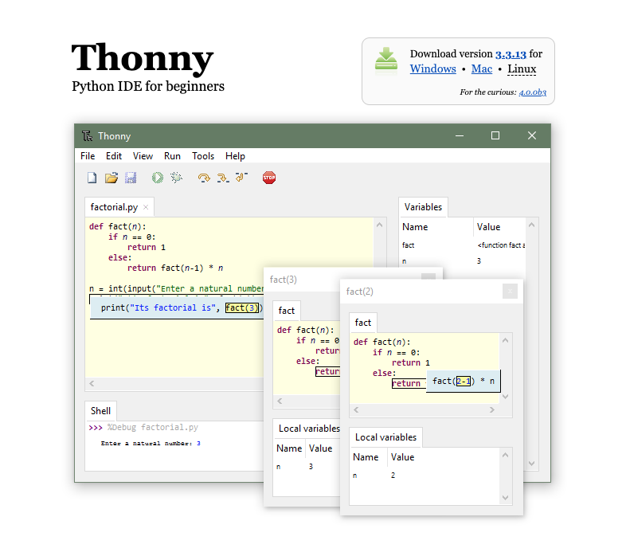
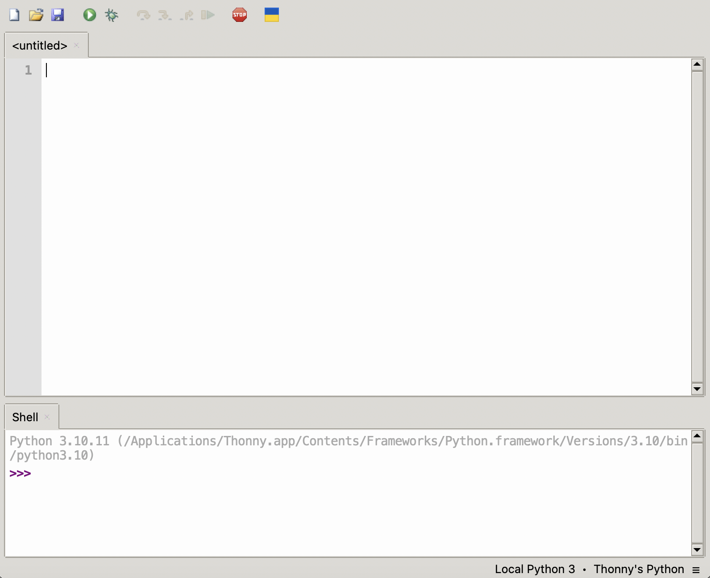
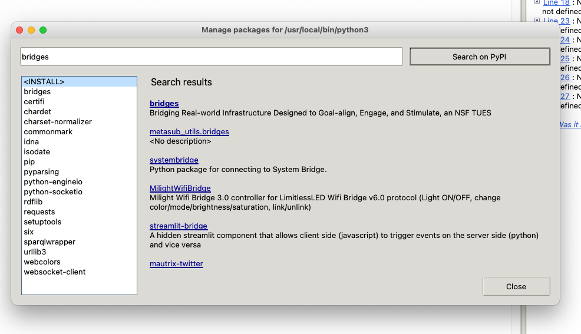
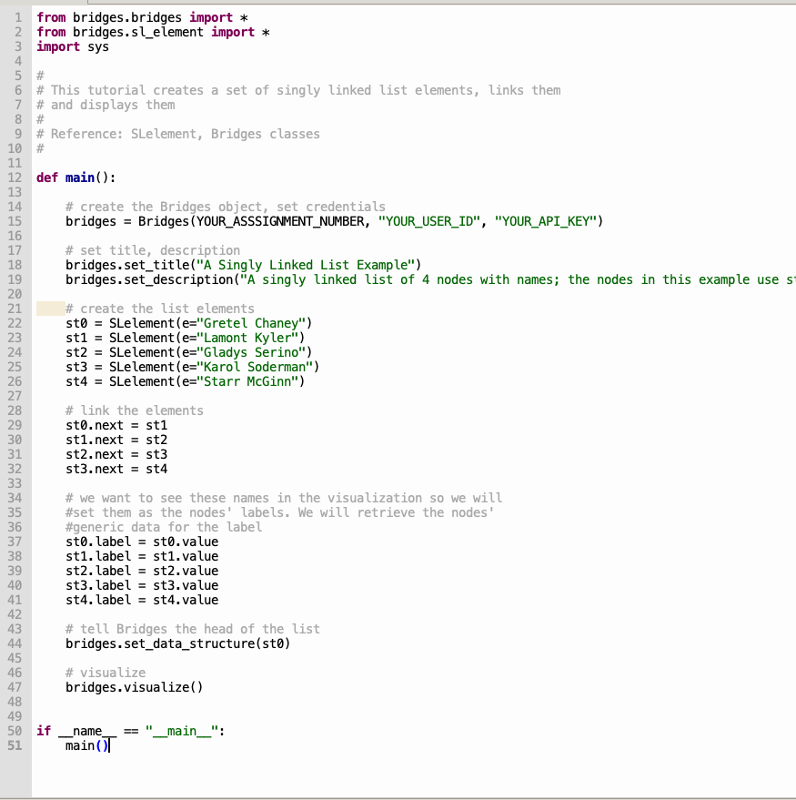
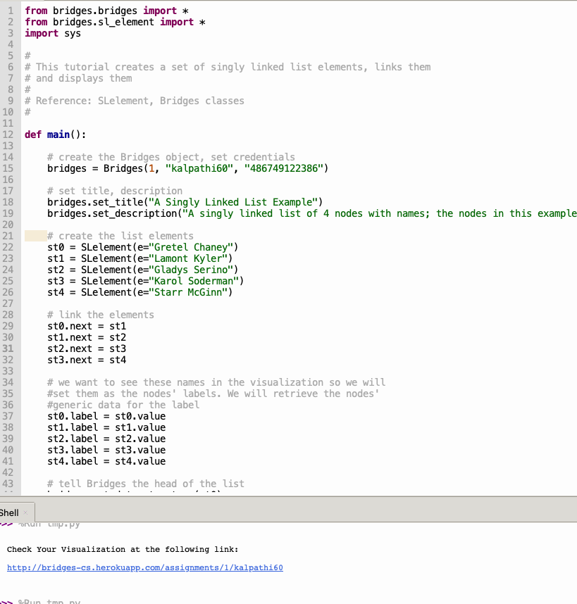

Step 1: Install Thonny
- If you do not have Thonny
installed,
download Thonny
and install it on your computer.
|

|
Step 2: Create Bridges Account
- Visit the Bridges
main page and create yourself an account
by clicking the login button
on the top navigation bar. Then, click 'Sign Up!' near the bottom of the window. Please ensure that
your user id is devoid of spaces, as it will be
used as part of the web link for your projects.
After creating your account, click on the profile tab
in the upper right corner to view your
account details. Once in your profile, you will see your
API Key; you will need this API key later in the tutorial (as well as in every BRIDGES program
you write).
|
Step 3a: Thonny Environment Setup
- Open the Thonny application, you should see something like this, with
an empty text editor and a console window below it:
|

|
Step 3b: Check Python interpreter,
Install Bridges package
- Click on the menu button, Tools-->Manage Packages. This will
bring up a pop up window to show the packages currently installed on
the system (see adjacent window); the window shows BRIDGES already
installed. If you dont see it (very likely!) type bridges in the
search bar and once it shows up, click on it and install the Bridges
package. You should see a package list as shown in the adjacent image.
Go back to the main IDE.
- Thonny comes with an old version of Python (3.7.9); You must use a more recent version (3.8 or higher).
|

|
Step 4a: Load and run an example BRIDGES program
- Copy/Paste this
Singly Linked List Tutorial into the main code window.
- Thonny saves programs on the local drive; Save your program by clicking on
File-->Save and pick a convenient location in your file system.
- Set an assignment number, and your credentials in the line that creates
the Bridges object at the beginning of the program.
- Run the program by hitting the play
- You will see a link printed on the console. Use that to visualize the
output.
|


|
Running additional BRIDGES programs, Using a different Python interpreter.
- Visit the
BRIDGES Tutorial site to run additional BRIDGES programs.
- Using a different Python Interpreter.
To use a more recent Python version, you must first install it on your computer; then you go through Step 3b to switch to the new
interpreter; you will likely need to install Bridges again for the new interpreter. The Tools-->Options button provides the option to choose a different python interpreter.
|